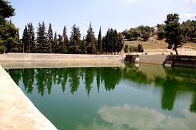

المعالم الاثرية:
| بركة السلطان |
الحرم الابراهيمي |
متحف الخليل |
البلدة القديمة |
كنيسة المسكوبية |
|  |
 |
 |
 |
 |
القرى المهجرة:
بعض الشهداء:
- محمد الجعبري: استشهد بتاريخ 2003.
- حافظ الرجبي: استشهد بتاريخ 1-12-1978.
- عبد الله القواسمي: استشهد بتاريخ 2003.
- دانيا جهاد: استشهدت بتاريخ 25-10-2015.
Back